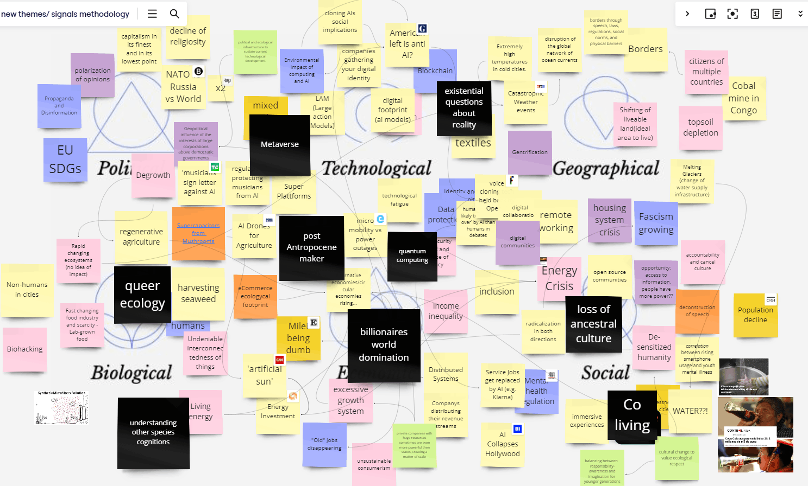
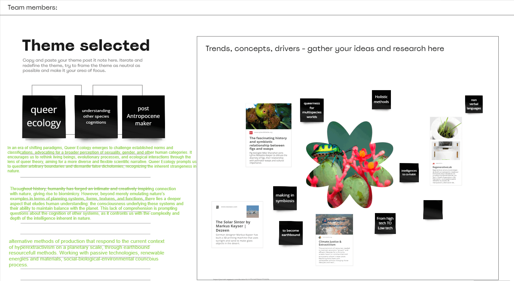
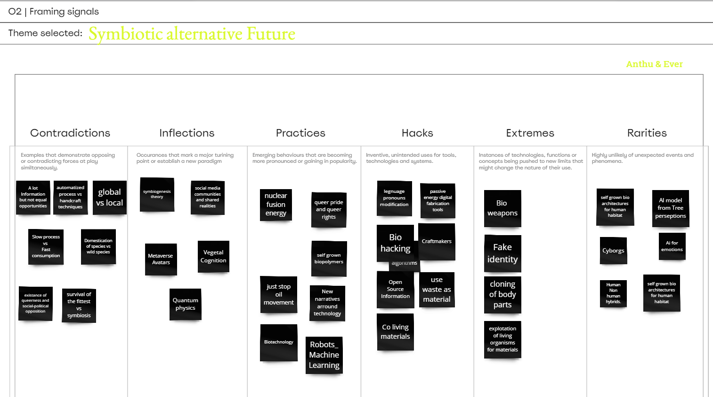
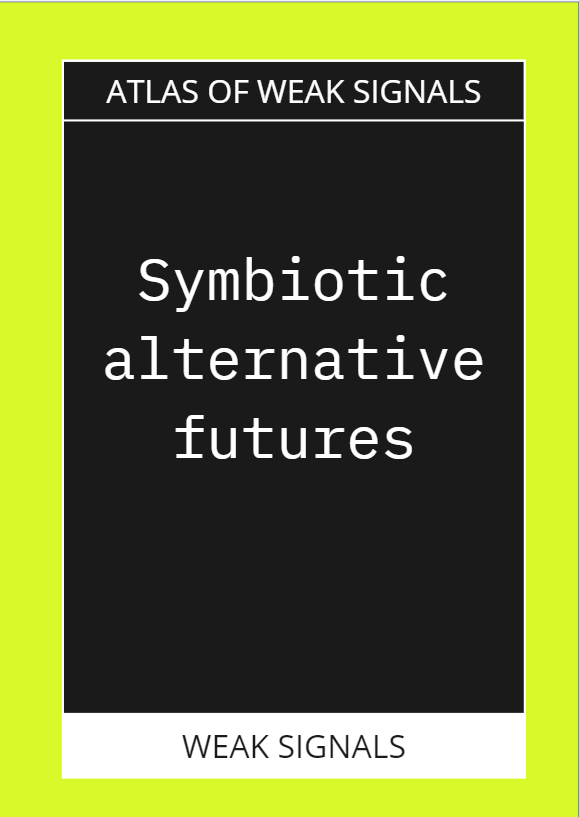
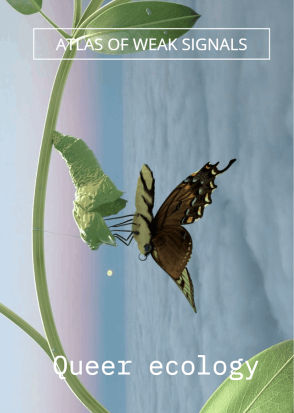
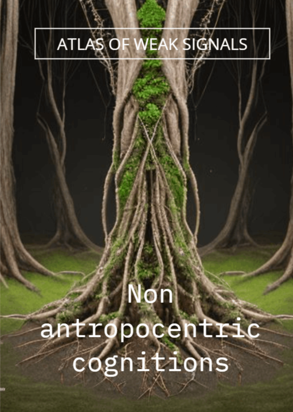
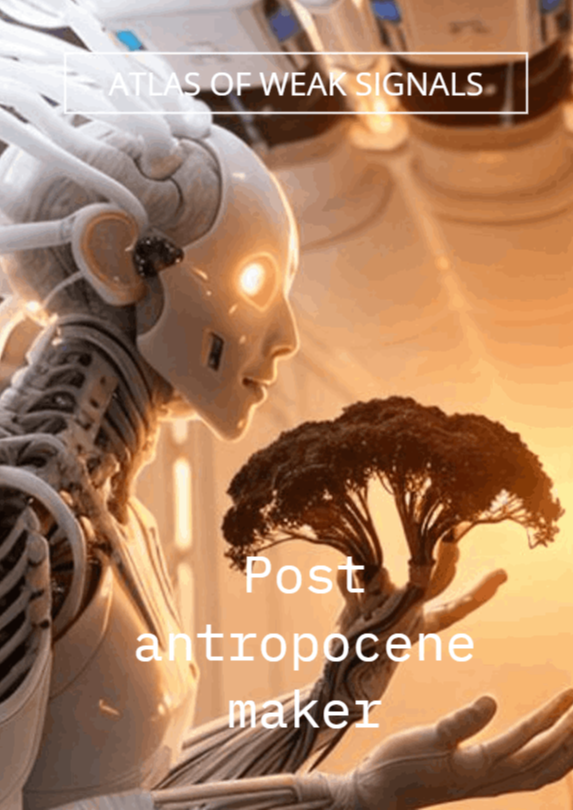
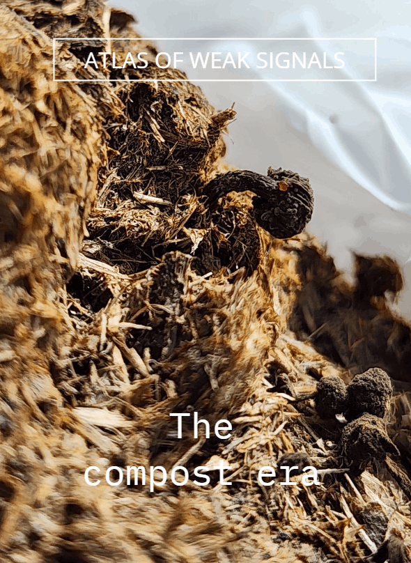
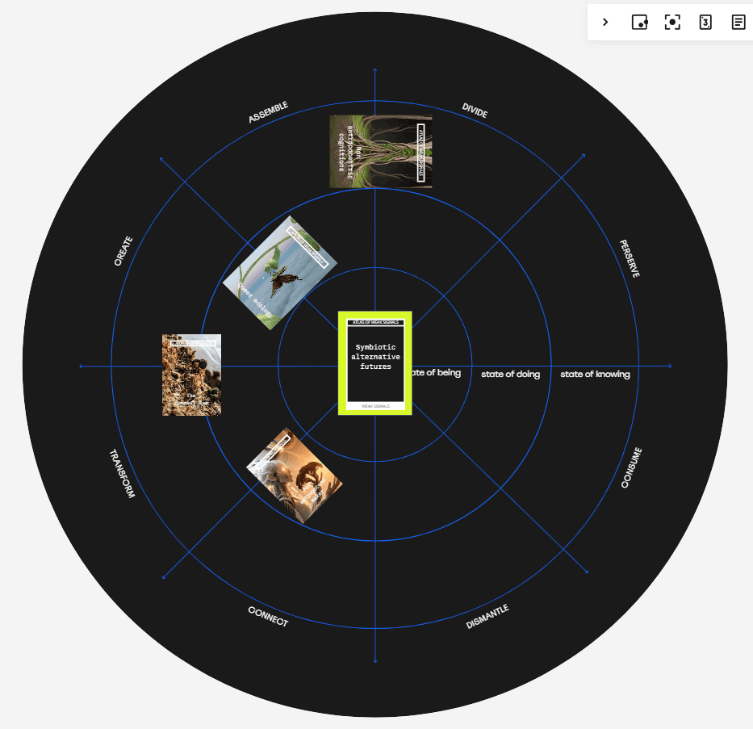

Mobirise Re Explorations with new perspectives,

Currently, we find ourselves in a crucial context of evolution, life, and death of man, living organisms, time, nature, and interrelation systems. Additionally, as a species, we have experienced unprecedented population growth, saturating space with our existence. All of this has led to the generation of diverse realities, each influenced by individual and collective perceptions, resulting in new problems, needs, trends, and other aspects.
I firmly believe that design involves empathizing and feeling as an individual and as part of a collective. That's why, at the beginning of the exercise, we focused on mapping the areas of Biological, Social, and Technological aspects.
After generating and amplifying the realities that my colleagues enriched on the board, we reflected on topics related to our personal research to work on them more closely. Below, I present three 3 topics of interest that you can learn more about.
#InterdiciplinaryTech #Symbiotic #ThecompostEra #NonRationalThinking #PostAnthropocene

Building upon these curiosities and resonating concepts, we constructed a map of projects, research, and readings that inspired us to explore new approaches.
. Queer Ecology
. Understanding other species cognition.
. Post Anthropocene maker
Then, we continued with the next board, which helped us visualize our topics and where they could fit best, aiming to understand which category they fell into.

Organizing the topics between contradictions and rarities helped us visualize insights for creating our AOWs cards.






Each of the cards we generated is linked to my personal experience and reflects the evolution in my perception since I joined the Master's program. Playing with these cards helped me break the ice at the beginning of the course with topics that impact society. Thanks to this activity, I felt empowered with reflections I had already been observing. I firmly believe that this strategy should be shared with every designer in the world who wishes to create within their context, thus empowering each existing reality.
"Symbiotic Alternative Futures" is a valuable tool CARD for rethinking how we can co-create to coexist.
Mobirise